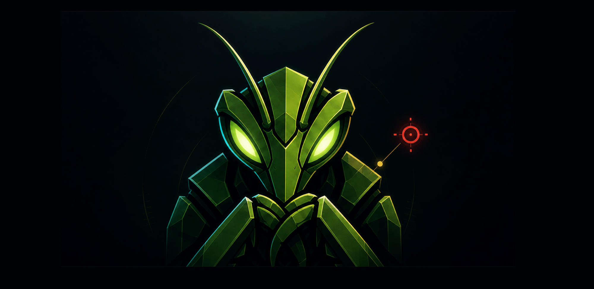

Mantis is a Rust daemon plus a Claude-Code-native MCP agent workflow that plans, executes, verifies, and reports authorized offensive-security engagements — with cryptographically-verifiable provenance.
An AI-driven pentest pipeline with mechanically-enforced gates, parallel sub-agents, and a signed Merkle event log so every claim is reproducible and provenance-checked.
Every engagement walks RECON → AUTH → HUNT → CHAIN → VERIFY → GRADE → REPORT through tested Rust gates. No phase-skipping.
Wave fan-out spawns ≥3 hunter sub-agents per wave, each running its own technique pack with bounded context.
Meet the agents →Every outbound HTTP request goes through an Ed25519-signed CONNECT proxy. Out-of-scope traffic is refused at the host boundary.
Egress + scope →Every state change is a BLAKE3 leaf in an Ed25519-signed per-engagement Merkle tree, verifiable with mantis-verify.
Brutalist (skeptic) → Balanced (false-negative catcher) → Final (fresh re-run). Drift in the adjudication_plan_hash hard-refuses promotion.
Render to Markdown, PDF, HackerOne JSON, Bugcrowd JSON, SARIF, or OpenVEX — with a severity floor you control.
Run the pipeline →
A linear FSM with mechanically-enforced gates. Operators can override HUNT → CHAIN and
CHAIN → VERIFY with a ≥ 20-char rationale; every override is recorded in the Merkle log.
One prebuilt platform binary per machine. No postinstall scripts — safe in Bun and pnpm strict mode.
npm install -g mantishack
mantis init
mantis hack app.example.com --i-have-authorizationbun add -g mantishack
mantis init
mantis hack app.example.com --i-have-authorizationyarn global add mantishack
mantis init
mantis hack app.example.com --i-have-authorizationpnpm add -g mantishack
mantis init
mantis hack app.example.com --i-have-authorizationcurl -fsSL https://raw.githubusercontent.com/deonmenezes/mantishack/main/install.sh | bash
mantis hack app.example.com --i-have-authorizationgit clone https://github.com/deonmenezes/mantishack
cd mantishack
cargo install --path crates/mantis-cli --force
cargo install --path crates/mantis-daemon --force
cargo install --path crates/mantis-mcp --force
mantis initFull install guides: npm/bun/yarn/pnpm · one-line curl · from source
Three commands. mantis init wires the daemon and the MCP server.
mantis hack drives the full 7-phase FSM end-to-end against an authorized target.
# 1. install
npm install -g mantishack
# 2. wire daemon + MCP
mantis init
# 3. ethically hack an authorized target
mantis hack app.example.com --i-have-authorizationOther entry points:
mantis pentest <target> --i-have-authorization — daemon-driven one-shot, no LLM orchestrator. →mantis goal "find idor" --target https://api.example.com --i-have-authorization — goal-directed, multi-wave. →mantis find-auth-bugs --target https://app.example.com/ --i-have-authorization — legacy auth-differential pipeline. →/mantishack <target> inside Claude Code — same orchestrator, interactive.Every page in the Mantis docs, organized by topic. All pages are also browsable on GitHub.
mantis hackFull FSM, one commandmantis investigateURL / file / prompt — full Mantis stack, no FSMmantis pentestDaemon-driven one-shotmantis goalGoal-directed, multi-wavemantis promptClaude-Code-style one-shotmantis statusSetup snapshot (text + JSON)mantis modelTab / Shift+Tab Claude-model pickermantis find-auth-bugsLegacy auth-differential pipeline